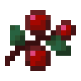

Ensopados de cogumelos podem ser obtidos ao "ordenhar" uma coguvaca com uma tigela vazia. Isso é realizado ao usar uma tigela em uma coguvaca. A tigela é substituída pelo item do ensopado de coguvaca.
Se uma pilha com mais de uma tigela é usada em uma coguvaca, apenas uma tigela é consumida e o ensopado de cogumelos entra em um slot vazio do inventário, ou é descartado se o inventário do jogador estiver cheio.
Comer ensopado de congumelos restaura 6 de fome e 7,2 de saturação.
Comum.